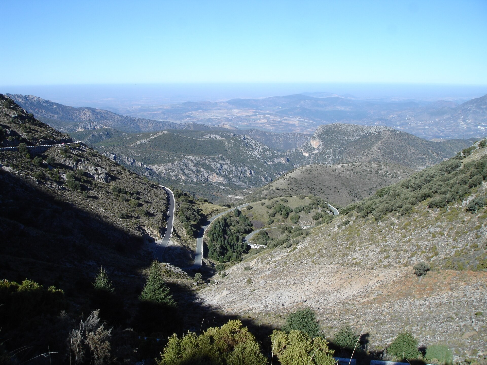
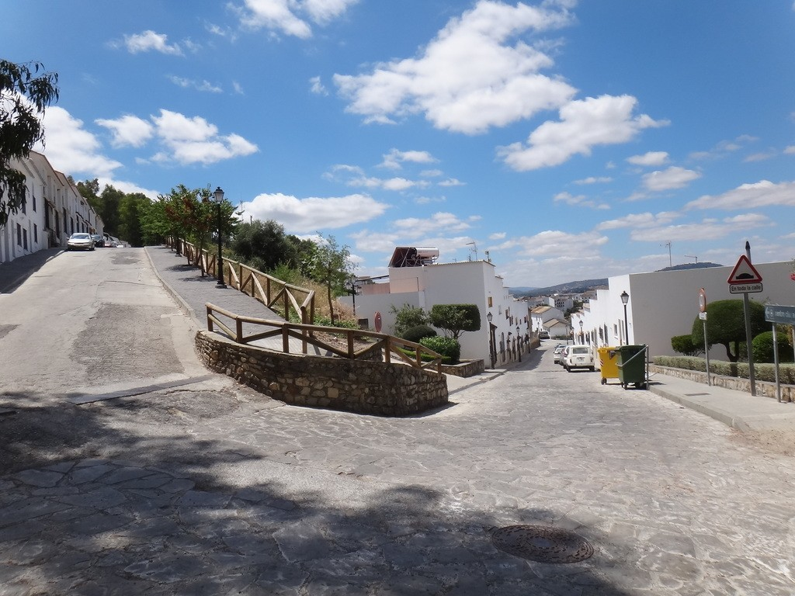
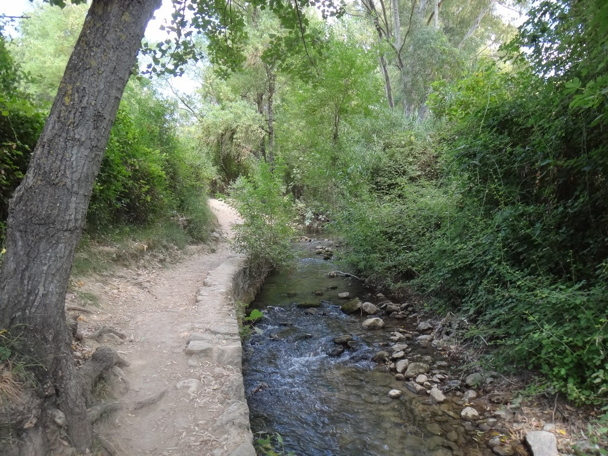

ALOJARSE EN LA SIERRA DE CÁDIZ
Casa Almazara

Quedarse en El Bosque.
Sentirse parte del viaje.
Casa Almazara es una propuesta de alojamiento turístico en El Bosque, en la Sierra de Cádiz.
Una estancia para descubrir la localidad con tiempo: pasear entre sus calles, sentarse en una plaza y acercarse al paisaje que la rodea.
Conoce el lugarLas fotografías de esta web muestran El Bosque y su entorno. No representan los espacios ni las instalaciones de Casa Almazara.
El blanco del pueblo.
El verde de la sierra.
El Bosque reúne calles encaladas, plazas y naturaleza. Un rincón de la provincia de Cádiz en el que el paisaje forma parte de cada paseo.

Salir a pasear.
Y dejarse llevar.
El río Majaceite y el jardín botánico El Castillejo son dos referencias para conocer la naturaleza de la zona. El paisaje de la Sierra de Grazalema completa la visita.
Descubrir El Bosque
EL VIAJE NOS TRAE AQUÍ
Nos vemos
en El Bosque.
Casa Almazara en El Bosque
11670 El Bosque, Cádiz
España
La dirección exacta del alojamiento no está confirmada.